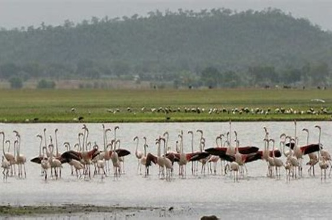
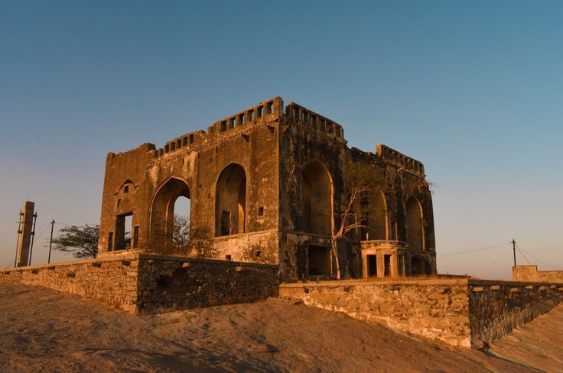

Pocharam Wildlife Sanctuary

Located in Medak district, Pocharam Wildlife Sanctuary is a lesser-known gem offering a tranquil retreat amidst nature.
The sanctuary is home to various species of flora and fauna, including deer, sloth bears, leopards, and a variety of bird species.
Visitors can enjoy nature walks, birdwatching, and boating in the picturesque Pocharam Lake, which is surrounded by lush greenery.
Bhongir Fort

Bhongir Fort, also known as Bhuvanagiri Fort, is a historic fort located in Yadadri Bhuvanagiri district.
The fort is perched atop a unique monolithic rock formation, offering panoramic views of the surrounding plains and hills.
Explore the ancient architecture, intricate carvings, and remnants of the fort's past, including granaries, water tanks, and temples.
Koilkonda Fort

Koilkonda Fort is a lesser-known fortification situated in Mahbubnagar district, surrounded by picturesque hills and forests.
The fort is known for its strategic location and architectural marvels, including the imposing entrance gate, bastions, and reservoirs.
Visitors can trek to the fort, explore its ruins, and enjoy breathtaking views of the surrounding landscape.